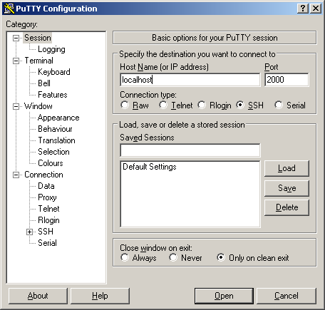
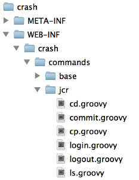

CRaSH
Common Reusable SHell
eXo Platform Academy
May 2013
Agenda
- Overview and Architecture
- Configuration
- Commands
- Exercises
Overview and Architecture
Overview
- A shell for the JVM
- Execute a "command" on the JVM
- Comes with a bunch of commands
- You can create your own !
- Very useful for managing and monitoring the platform
- Available as an extension in eXoPlatform 4.0
- Not tied to eXoPlatform
- Website : http://www.crashub.org/
Architecture
- Several modes :
- Standalone run CRaSH from the command line directly
- Attach attach CRaSH to a JVM located on the same host
- Webapp embedded deployed in a web container
- Spring embedded embedded and configured in a Spring configuration
- Commands are written in Groovy
- SSH and Telnet connectors for Webapp mode
- In eXoPlatform : Webapp embedded mode
Installation and Configuration
How to install it ?
Use the extension installation script :
<EXOPLATFORM_ROOT>/extension.(sh|bat) --install crashThat's it !
Configuration
- All configuration in /WEB-INF/crash/crash.properties
- SSH port (default is 2000)
- SSH key
- Telnet port (default is 5000)
- Authentication configuration
- ...
# VFS configuration
crash.vfs.refresh_period=1
# SSH configuration
crash.ssh.port=2000
#crash.ssh.keypath=/path/to/the/key/file
# Telnet configuration
crash.telnet.port=5000
# Authentication configuration
crash.auth=jaas
crash.auth.jaas.domain=gatein-domain
Commands
Connection
- Telnet connection
telnet localhost 5000- SSH connection (use your eXoPlatform credentials)
ssh -p 2000 root@localhostroot@localhost's password:
______
.~ ~. |`````````, .'. ..'''' | |
| |'''|''''' .''```. .'' |_________|
| | `. .' `. ..' | |
`.______.' | `. .' `. ....'' | | 1.2.1
Follow and support the project on http://www.crashub.org
Welcome to thomas-laptop + !
It is Thu May 23 14:26:29 CEST 2013 now
%Connection with Putty
Available commands
help command lists all the available commands% help
Try one of these commands with the -h or --help switch:
NAME DESCRIPTION
cd changes the current node
commit saves changes
cp copy a node to another
dashboard
env display the term env
filter A filter for a stream of map
help provides basic help
java various java language commands
jdbc JDBC connection
jmx Java Management Extensions
jndi Java Naming and Directory Interface
jpa Java persistance API
jvm JVM informations
log logging commands
ls list the content of a node
man format and display the on-line manual pages
mixin mixin commands
mv move a node
node node commands
pwd print the current node path
repo repository interaction commands
rm remove one or several node or a property
rollback rollback changes
select execute a JCR sql query
shell shell related command
sleep sleep for some time
sort Sort a map
system vm system properties commands
thread JVM thread commands
version versioning commands
ws workspace commands
xpath execute a JCR xpath queryCommands help
--help or -h lists the command options. Try “jdbc -h”% jdbc -h
usage: jdbc[-h | --help] COMMAND [ARGS]
The most commonly used jdbc commands are:
props show the database properties
close close the current connection
table describe the tables
open open a connection from JNDI bound datasource
info describe the database
connect connect to database with a JDBC connection string
execute execute a SQL statement
select select SQL statement
tables describe the tablesJCR Commands
Some of the commands are dedicated to the JCR. They allow to browse and manage it.The first thing is to do is to connect to a workspace (here the collaboration workspace) :
% repo use container=portal
% ws login -u root collaborationNow all the JCR commands are available : cd, ls, pwd, mv, rm, export, import, ...
Disconnect from the workspace with :
% ws logoutJCR Commands examples
-
ls
- ls lists not only folder contents but also details of a single node
% ls
/sites/intranet
+-properties
| +-jcr:primaryType: exo:portalFolder
| +-jcr:mixinTypes: [exo:modify,exo:datetime,exo:owneable,exo:sortable,metadata:siteMetadata,dc:elementSet]
| +-keywords: 'intranet'
| +-robots: 'index,follow'
| +-siteTitle: 'intranet'
| +-exo:dateCreated: 2013-05-23T14:47:23.154+02:00
| +-exo:dateModified: 2013-05-23T14:47:23.154+02:00
| +-exo:index: 1000
| +-exo:internalUse: false
| +-exo:lastModifiedDate: 2013-05-23T14:47:23.158+02:00
| +-exo:lastModifier: '__system'
| +-exo:name: 'intranet'
| +-exo:owner: '__system'
+-children
+-/sites/intranet/js
+-/sites/intranet/css
+-/sites/intranet/medias
+-/sites/intranet/documents
+-/sites/intranet/web contents
+-/sites/intranet/links
+-/sites/intranet/categories
+-/sites/intranet/ApplicationDataJCR Commands examples
-
select
- SQL-like select command for queries on the JCR
% select * from nt:file where jcr:path like '/sites/intranet/%'
...
The query matched 42 nodes
...JCR Commands examples
-
node set
- Add/Update a property on the current node
% node set exo:permissions '[any read]'No more setperm ? To be tested, faced some issues...
JCR Session Commands
-
You are working in a CRaSH session
- The changes you do in the session are not visible outside of your CRaSH session!
-
Commit !
- Saves the changes you did in the current session.
- A node can be provided to save the state of the this nodes and its descendants only.
-
Rollback
- In order to rollback the changes of the current session.
- A node can be provided to rollback the state of the this nodes and its descendants only.
JCR SCP Export and Import
- You can use scp (with your favorite tool) to export/import nodes
-
Export
Export the node /production/app:gadgets of the workspace portal-system in the file app_gadget.xmlscp -P 2000 root@localhost:portal:portal-system:/production/app:gadgets . -
Import
scp -P 2000 app_gadgets.xml root@localhost:portal:portal-system/production/app:gadgets
For Windows: pscp -scp -P 2000 root@localhost:portal…
Commands Operators
-
“|” Pipe Operator
- Streams a command output stream to a command input stream
- Example: select * from exo:article | addmixin mix:referenceable
-
“+” Distributor Operator
- Merges (“distributes”) two streams into one stream
-
“+” after the pipe
- select * from nt:unstructured | setperm -i any -a read + setperm -i any -a write
-
“+” before the pipe
- select * from nt:file + select * from nt:folder | addmixin mix:votable
Exercises
- Connect to CRaSH
ssh -p 2000 root@localhost% repo use container=portal
% ws login -u root collaboration% ???% select * from nt:file where jcr:path like '/sites/intranet/%'TODO : addmixin does not exist anymore, use node set ?
Create your own commands !
Create your own commands !
- You can easily add your own commands
- A command is a Groovy script located in /WEB-INF/crash/commands 
- Commands are hot reloaded
- All you need to know is here : http://www.crashub.org/reference.html#d5e517
Exercises
- Create a command that lists all the users
- Create a new Groovy script called users.groovy in /WEB-INF/crash/commands (copy an existing one)
TODO : create the script and add tips in the slide
CRaSH
Common Reusable SHell
Copyright 2013 eXo Platform